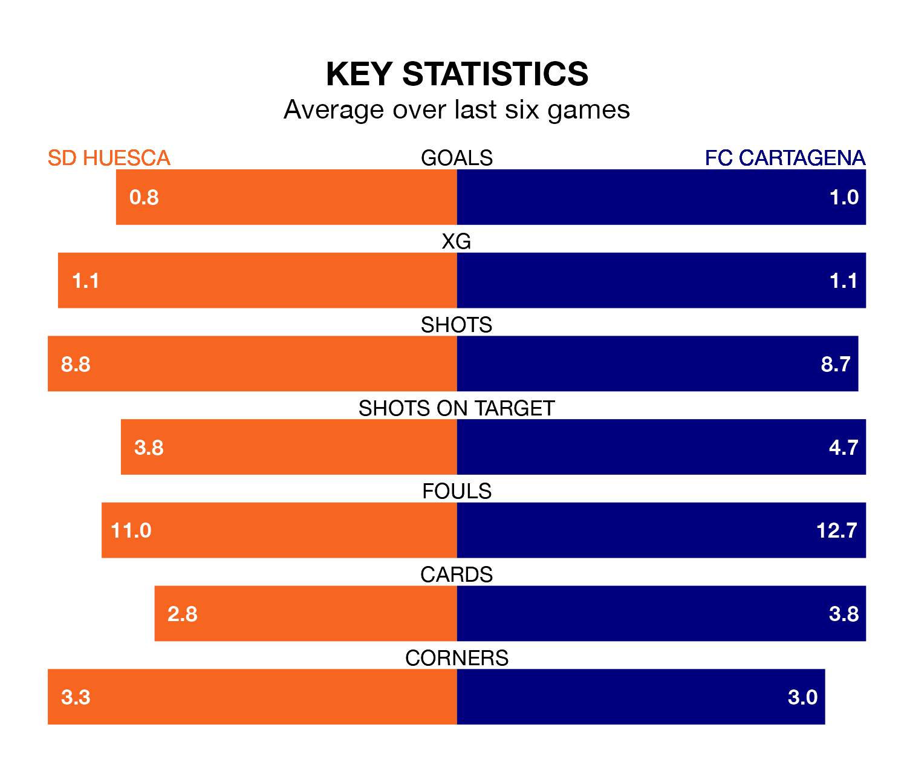

Thursday's late match at the Estadio El Alcoraz sees two relegation candidates play each other, as 19th-ranked SD Huesca host bottom of the table FC Cartagena.
Huesca have picked up 19 points from their first 19 Segunda División games, with four wins and seven draws.
That is four points more than FC Cartagena have collected, having won three and drawn six.
In the last five years, Huesca and Cartagena have played each other on four occasions. Huesca won two of them, Cartagena one, and they drew once.
On average, SD Huesca scored 1.8 goals and FC Cartagena 0.8 in those matches.
Their last meeting was on January 14, when they played out a 0-0 draw.
Huesca are in mixed form in the Segunda División, with two wins and a draw from their last six games.
With two wins and three draws over that period, Cartagena's form is slightly better – they have taken nine points from 18, compared to SD Huesca's seven.
With 13 goals in 20 games so far this season, the home side are the league's lowest scorers with 0.7 goals per game. But they are conceding fewer than average too, letting in 18 goals at a rate of 0.9 per game.
FC Cartagena are also below average scorers, with 0.8 goals per game, compared to a league average of 1.2. They have conceded 1.6 goals per game.
Huesca's last match was on Sunday, a 2-1 loss against Levante UD, with Samuel Obeng Gyabaa getting the goal for SD Huesca.
Cartagena lost 3-0 against Burgos CF last time out, on Saturday.
